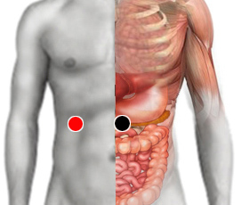

Estafilococo aureus (-)
cabeza páncreas - hígado
cabeza pancreas- suprarrenales
línea arcuata - línea arcuata
subclavia - esófago
empeine - empeine

Generalidades:
Síntomas: dolor abdominal, diarrea, vómito, malestar en general. Se alimentan de la piel humana. Causante de la Hepatitis K .
Principal causa de Reflujo Gastroesofágico en niños, en adultos es causante del Cancer de Cabeza de Páncreas, Diabetes,
Falsa halitosis. Puede estar asociada al Asma provocando crisis en niños, ancianos y alcoholicos. Falso Lupus, Intolerancia al gluten, las toxinas se van al intestino y causan colitis, gastritis.
Existen muchas variedades de estas bacterias y muchas personas pueden ser portadores asintomáticos.
Transmisión:
Son bacterias que se agrupan en racimos, tienen color dorado (de ahí su nombre), muy comunes. Su contagio con frecuencia ocurre en hospitales por equipo contaminado (catéteres, guantes, personal del hospital, otros pacientes).